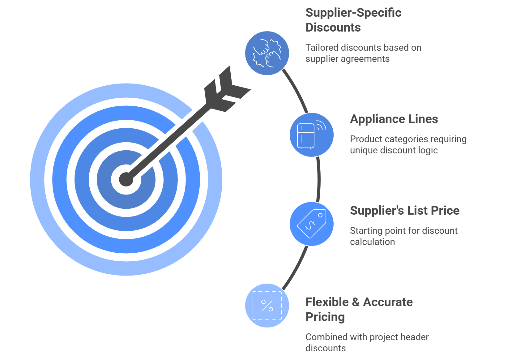
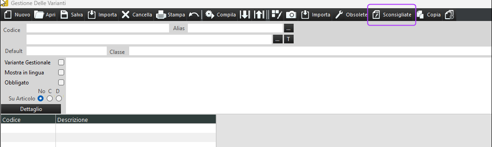

Data de lançamento: 02/10/2025 Atualizado em: 02/10/2025 Autor: Equipe de Produto e P&D
Introduzimos uma nova funcionalidade que permite aplicar descontos específicos de fornecedores a linhas de eletrodomésticos, proporcionando maior flexibilidade e precisão na definição de preços. Anteriormente, os descontos eram aplicados uniformemente com base nas informações do cabeçalho, o que impedia cenários em que determinadas categorias de produtos, como eletrodomésticos, exigiam uma lógica de desconto diferente.
Com essa implementação, os descontos para linhas de eletrodomésticos agora são calculados com base no preço de tabela do fornecedor , em vez de usar o desconto geral definido no cabeçalho do projeto. Essa abordagem garante que os preços reflitam os acordos e condições específicos de cada fornecedor.

Uma nova funcionalidade foi introduzida nos dados mestre de variantes, permitindo marcar variantes como “não recomendadas” . Essa funcionalidade proporciona maior controle sobre o processo de design e seleção, graças a um novo botão adicionado à barra de ferramentas da interface de dados mestre de variantes.
Este botão permite aos usuários sinalizar facilmente uma variante como "não recomendada" e está visível tanto nos formulários clássicos quanto no dauFiltraVarianteGraficaNew.

Introduzido um novo comando para mesclar PDFs:
!MERGEPDF 0 $(PDFFILE)
• parâmetro 1 = 0: mescla os arquivos em $(PDFFILE) e os salva no documento atual
• parâmetro 1 = 1: mescla os arquivos em $(PDFFILE) e os adiciona ao documento atual
• parâmetro 2 = $(PDFFILE): lista de arquivos PDF a serem mesclados, separados por “;”
Observação : os nomes e caminhos dos arquivos não devem conter espaços.
A função de exportação JSON disponível no menu do programa foi atualizada para incluir corretamente o campo de número de série. Isso afeta a função Exportar JSON no 3CAD Evolution, não a exportação JSON no 3CAD Next.
Uma nova entrada foi adicionada ao arquivo .ini para definir localmente se o segundo monitor deve ser usado.
Dois novos campos, CALCULATION_GROUP e ITEM_GROUP, foram adicionados à tabela Itens.
Uma nova chamada de script, SearchOrderNumber, foi adicionada a fJob e fJobAddLoad.
Implementada a capacidade de realçar a caixa correspondente na visualização gráfica clicando em uma linha de nível 3 na estimativa.
Adicionada uma opção para desativar o recálculo final da tarefa ao alternar para o cabeçalho do projeto.
Implementada a funcionalidade de definir um desconto no preço de itens promocionais.
Nova tipologia Promo-Plus implementada.
A funcionalidade do parâmetro moreinstances foi ampliada. Se definido como 1, o programa pergunta se você deseja abrir uma nova instância. Se definido como 2, ele impede a abertura de uma segunda instância.
O parâmetro jobsalvaimmaginimaximized=1024.768 (jobsalvaimmaginimaximized=largura em pixels, altura em pixels) deve ser adicionado ao arquivo INI (catálogo). Ele é ativado clicando duas vezes na imagem. Se a imagem couber nas dimensões da tela, o formulário será exibido no mesmo tamanho; caso contrário, a imagem será redimensionada.
Novo comando CHECKMODULO em dauvarext.
Um novo comando no dauvarext. Ele chama o serviço jExportPromoArtByArtType para exportar itens promocionais, vinculados ao gerenciamento de promoções.
Adicionado o valor nextuniqueid à caixa ao importar o arquivo JSON do 3CAD Next para o 3CAD Evolution.
Adicionada opção no menu suspenso "Mostrar/Ocultar".
O sinalizador estava desativado e agora foi desbloqueado.
Adicionada a variável WALL_PRINT_NUMBER para consultar o valor.
Este recurso consiste em uma caixa de seleção localizada na janela de exportação do catálogo.
Campos indicando a data e hora da última atualização do catálogo e do banco de dados foram adicionados no Supervisor, 3CADLite e 3CADPro.
Implementamos o tratamento de alterações manuais em arquivos ARG durante a exportação do Job-Emf.
Se os posicionadores perderem a referência à sua posição, defina a flag fixPlacer=1.
A tipologia agora está visível em VISUALIZAÇÕES - NOVA VISUALIZAÇÃO, após ter ficado oculta na impressão com /TE.
Se os posicionadores perderem a referência à sua posição, defina a flag fixPlacer=1.
O algoritmo para remover variantes obsoletas foi aprimorado para reduzir a lentidão do programa.
Um novo parâmetro foi introduzido para definir o plano de recorte distante na projeção Cavalier. O valor padrão é 1000.
A visibilidade de uma variável relacionada ao sinalizador ColliPerBox foi ajustada.
Ao salvar um pedido como galeria no 3CADLite, as promoções agora são mantidas corretamente ao reabri-lo.
Corrigido um erro no cálculo do preço para sobretaxas por metro linear. A sobretaxa agora é calculada por metro linear em vez do preço unitário.
A geração de pré-visualizações agora inclui macros, definidas como arquivos XML na
pasta _proto.
Os móveis agora são posicionados corretamente quando adicionados a paredes de dupla face no configurador.
Corrigido o problema no tratamento de ambientes pequenos no Redway.
O projeto agora solicita que você salve quando apenas a caixa de seleção "Confirmado" no cabeçalho for alterada.
Corrigido um problema em que algumas vistas geradas pelo ViewMaker não ficavam visíveis a menos que a opção "Enquadrar Tudo" fosse usada.
Corrigido um número ausente nas linhas de dimensão obtidas com o comando QY no scriptquote.
Foram feitas correções para permitir o trabalho com catálogos Lite no Pro sem a necessidade de instalar o BCP.
Corrigido um problema que causava a perda da lista de preços ao editar manualmente itens de nível 3 com PriceLockMode=1.
Corrigido um problema em que as variantes de cotação eram perdidas com PriceLockMode=1.
Gerenciamento de DitteAlias aprimorado ao carregar o projeto do 3CAD Lite.
Corrigidos problemas com o processamento de tarefas em vários catálogos.
O gerenciamento foi estendido também aos itens principais.
Corrigido um bug que afetava imagens JPG após a atualização 24H2 do Windows 11.
Corrigido um problema com as variáveis APPMOB_*.
A tipologia agora está visível em VISUALIZAÇÕES - NOVA VISUALIZAÇÃO, após ter ficado oculta na impressão com /TE.
Se os posicionadores perderem a referência à sua posição, defina a flag fixPlacer=1.
Exibição de variáveis de lote tratada na tela de erro promocional.
Corrigido problema com a função “Limpar tudo” durante a exportação de Ws.
Correção no tratamento da variável mgg.path na propriedade xCatalog.
Corrigidos vários problemas em que as paredes apareciam ou desapareciam automaticamente durante os processos de renderização.
Corrigido um erro no cálculo da intersecção de contatos de trabalho.
Corrigida a exibição incorreta das opções de variantes ao usar a pesquisa #T com registros obsoletos.
Adicionada funcionalidade para aplicar e reavaliar forçadamente uma ordem Lite ao abrir uma ordem Lite, definindo RivalutaOrdiniInternet=1 em _ecadpro\ecadpro.ini.
Corrigido um problema em que a função Desfazer não funcionava com Ctrl+Shift.
Corrigido um problema em que a regra do posicionador, incluindo o código do item, era transferida incorretamente para a caixa principal.
Implementada uma solução alternativa para o problema do primeiro quadro de texto.
Corrigido um problema com o carregamento de arquivos de catálogo no Lite (Pro).
Corrigida a inconsistência na classificação protórica entre 3cadPro e 3cadLite.
Correção do redimensionamento de imagem usando dauvarext: CONVERTIDRG1.
Antes de recriá-lo para evitar a inclusão de novos arquivos.
Corrigido um problema em que o uso da opção Aplicar no configurador impedia a alteração das opções iniciais.
Corrigida a exibição inconsistente de linhas horizontais que dividem outras linhas.
Corrigida a importação JSON com prefixos permitidos.
Corrigido um problema com a importação de JSON quando o nome do modelo continha um sublinhado.
Problemas corrigidos na verificação de importação de DXF.
Corrigido o problema em que o campo Aplicar ficava em branco em pedidos criados com a versão 803.
Adicionada a opção ini ProduzioneEstesaNoMatr para permitir o processamento de listas de materiais não agrupadas na produção estendida.
Corrigida a aplicação incorreta do parâmetro de filtro de extensão de arquivo no script AttachmentFilter.
Corrigidos problemas com a composição de promoções envolvendo itens alternativos, mesmo com códigos de venda final diferentes.
Corrigidos problemas com a composição de promoções envolvendo itens alternativos, mesmo com códigos de venda final diferentes.
Correção na exibição de pastas do Expo no 3CadShop.
Adicionada nova forma de lidar com a padronização de dados para vários protótipos HTML, tanto avançados quanto não avançados.
Corrigido um problema em que itens vinculados a várias avaliações estavam ausentes na versão Lite.
Corrigida a importação incorreta de variantes de cores em pedidos XML.
Corrigido um problema que impedia a exportação de DXF no 3cad Pro/Lite.
Corrigido um problema em que o script quotewall do ViewMaker não funcionava com paredes virtuais desenhadas na viewport.
Corrigido um problema em que !GETWALLVAR não retornava valores na versão 805.
Corrigido o valor _Wall_Found incorreto retornado por !GETWALLVAREXT.
Adicionada opção para excluir automaticamente os tetos existentes ao usar a função CRIAR TETO.
• Erro no nó 0 do SetWorkVista ao salvar
• Problema ao inserir escala em X na biblioteca de materiais
• Problema de falha na exportação no NEWVR se os arquivos JSON não forem gerados
• Erro ao exibir o cabeçalho do protótipo no 3CAD Lite ao alterar o catálogo
• O visualizador da Web não funciona na versão 806
• Erro ao publicar do SV
• A versão 3CadEvolution NoPDF encerra inesperadamente
• Redway trava ao redimensionar telas personalizadas
• Erro de estimativa com o catálogo Light no 3CAD Light
• Exibição incorreta do catálogo Light na tela de envio de pedidos
• Erro de download do Setup_3CadChromium
• Variável ExcluirOrdem na ordenação por caixa
• Não foi possível inserir caracteres noruegueses em head.erg
• Área vazia na lista de pedidos online
• Melhoria no tratamento do formulário de abertura de pedidos usando ddb
• Falha no programa ao inserir eldom
• Formulário de Controle de Erros VBS